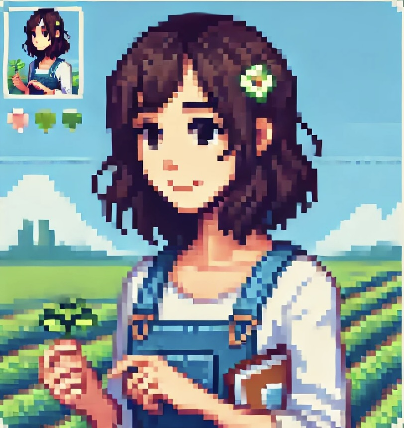

🌾 Agriculture Researcher
B.Sc. Agriculture (Hons) — Genetics & Plant Sciences
My background, academic skills, field expertise and personal story as an agriculture student.
Laboratory research on pesticide efficacy and soil health improvement — completed missions.
Certificates, academic honours, sports achievements and published research article.